Благоевград-Традиции и обичаи
Сурва
| До преди 20-30 години в Сурва са вземали участие само момци и мъже, които са изпълнявали и женски роли, но днес в групата се включват и млади момичета, облечени в носии (те обаче не се обличат и маскират като „станчинари"). Подготовката за Сурва - разучаването на хората и игрите, приготвянето на костюмите и маските - започва около месец преди празника. Станчинарите и франгалиите се събират на предварително уточнено широко място, където всеки ден надвечер се разучават хората и игрите. Приготвянето на костюмите се пази в пълна тайна както между самите участници в групата, така и между отделните групи в града. Основните персонажи в групата са: двама зурнаджии, един тъпанджия, 20-30 франгалии, булка, 10-15 моми, гяволи, арапи, пепелаш, мечкари и мечка, баба и дядо, магаре или камила, попове, доктор, диви и домашни животни и др. | 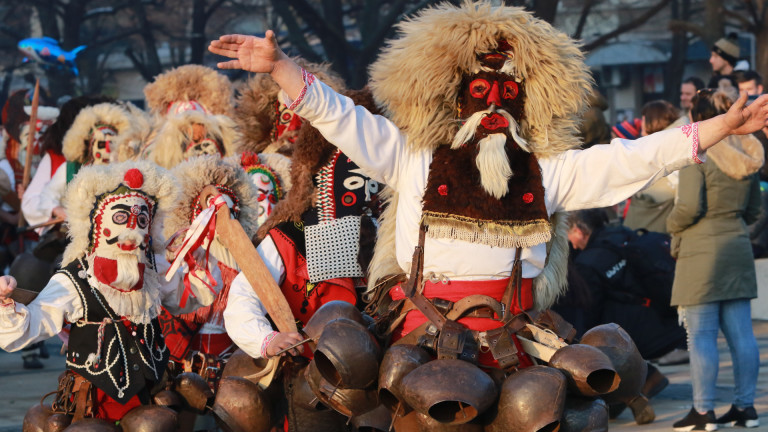 | |
| Най-страшните маски в Благоевград | ||
|---|---|---|
| 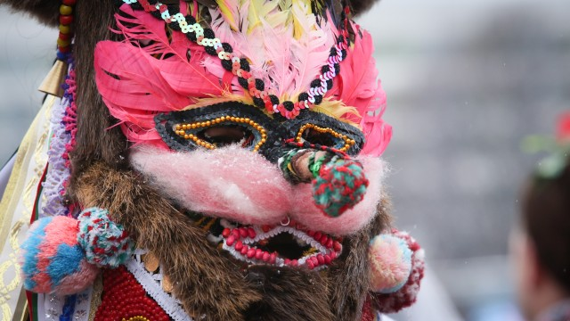 |
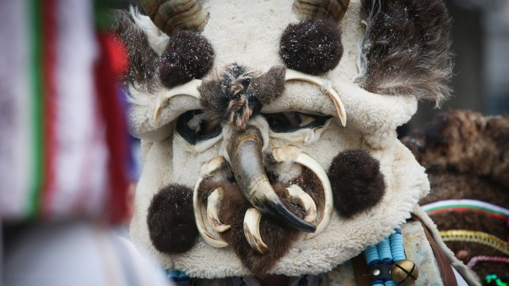 |
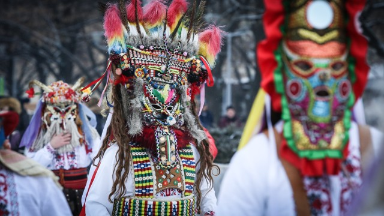 |
Бъдни вечер
| Бъдни вечер или навечерието на Рождество Христово – 24 декември, е един от най-светлите празници за християнското семейство. От православна гледна точка, трапезата на Бъдни вечер няма никакво значение или друго изискване освен да е постна, тъй като е последният ден от Рождественския пост. На този ден християните се подготвят духовно – чрез пост, изповед и молитва да приемат Светото Причастие и така достойно да посрещнат Христовото рождество. | Вечерта на 24 декември трапезата се слага рано и всички сядат заедно около нея, като никой не трябва да става. След това разчупва обредния хляб и първото парче символично се оставя за Богородица и починалите, после следва за къщата, а останалите се раздават на всеки член от семейството според възрастта, а на някои места и на домашните животни. Ако сребърната пара е в парчето, отделено за Богородица или за къщата, годината ще е много добра за всички. | Денят продължава с приготовленията на празничната трапеза. Според вярванията тя се разполага на земята, най-често върху слама, напомняща за Витлеемските ясли, в които е родила Дева Мария. На трапезата трябва да има 7, 9 или 12 ястия. Това са три от свещените числа на древноюдейската Кабала. Гозбите са постни. Някои от храните пък имат за цел да гонят злите духове – лук, чесън, мед и орехи. Под софрата се слага слама, напомняща за Витлеемските ясли, в които е родила Дева Мария. |
| 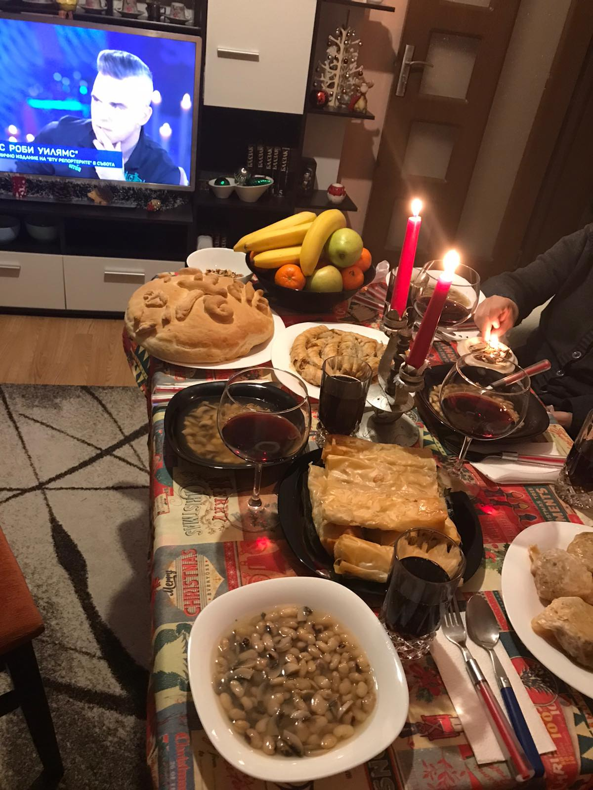 |
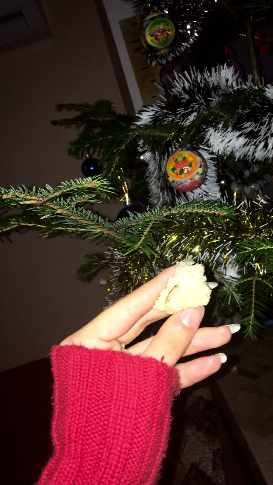 |
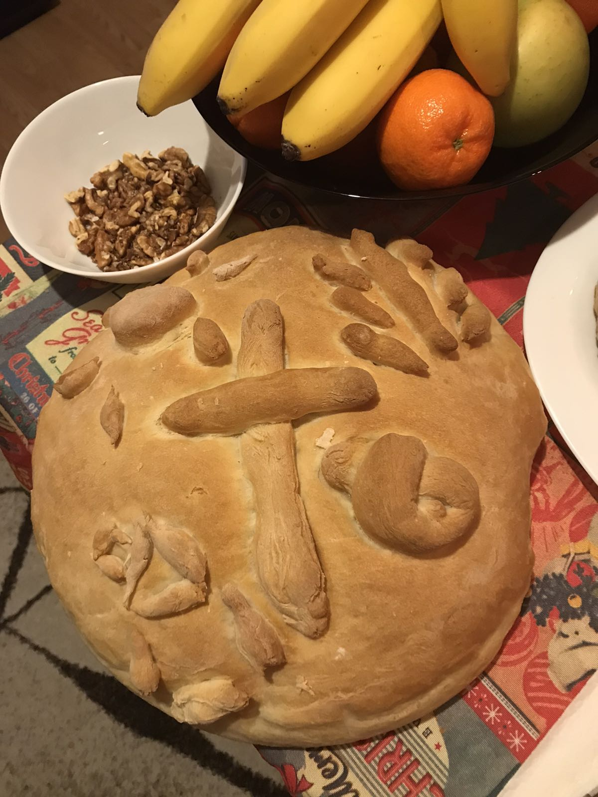 |
Коледа
| На Рождество Христово свършва дългият коледен пост и затова обядът е блажен и много богат. Коледа се празнува на 25, 26 и 27 декември. Датите са постоянни. Тогава се сменя календарният цикъл на живота според християнския календар и заедно с Великден този празник е един от двата най-важни за всеки християнин – символ на светлината, душевното просветление и победата на деня над нощта. На 25 декември след тържествената служба в църквата се посрещат гости, организират се веселия. Именници са Христо, Божин, Младен, Радомир, Радослав, Радостин, Кристиян и производните на тях. Коледни обичаи: Всеки домакин гледа в къщи да влезе най-напред момиче или млада жена, та агнетата да бъдат все женски, а бъдещето плодовито. В народния календар Рождество Христово започва в полунощ с обичая коледуване. В него участват само мъже – ергени, годеници и по-млади, скоро женени мъже, които се наричат коледари, коладници, коледаре, коледници. От полунощ до сутринта те обикалят домовете, пеят специални коледни песни с пожелания за здраве, щастие в семейството и богата реколта, а стопаните ги даряват с коледарски краваи, пари и различни храни. | 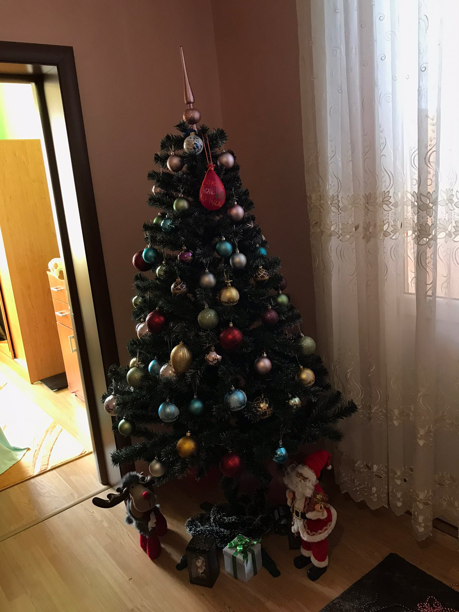 |
Великден
| Bеликден, смятан за най-големия християнски празник, всяка година озарявa дома на българското семейство. Великден е денят, в който християните честват Възкресението на Сина Божи Иисус Христос. Яйцата, козунака и агнето са три от основните елементи на великденската празнична трапеза. Всяка година традицията повелява яйцата да се боядисват на Велики четвъртък или Страстната събота. Първото яйце винаги трябва да бъде боядисвано в червен цвят. В навечерието на Великден се обикаля черквата в града и този, който успее да запази огънчето до вкъщи ще бъде здрав и щастлив през годината. Петъкът от Страстната седмица се нарича Разпети Петък и тогава се минава под масата в черквата за здраве и благоденствие. | 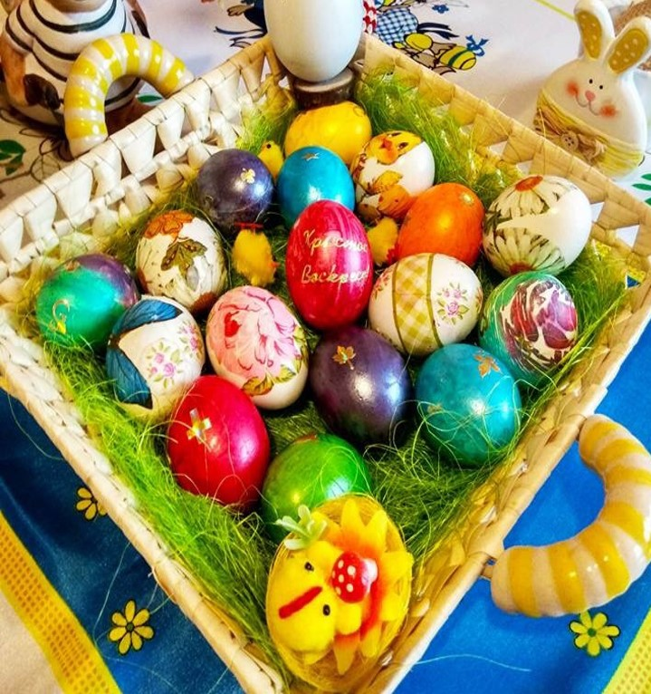 | |
| Домашно направени козунаци | ||
|---|---|---|
| 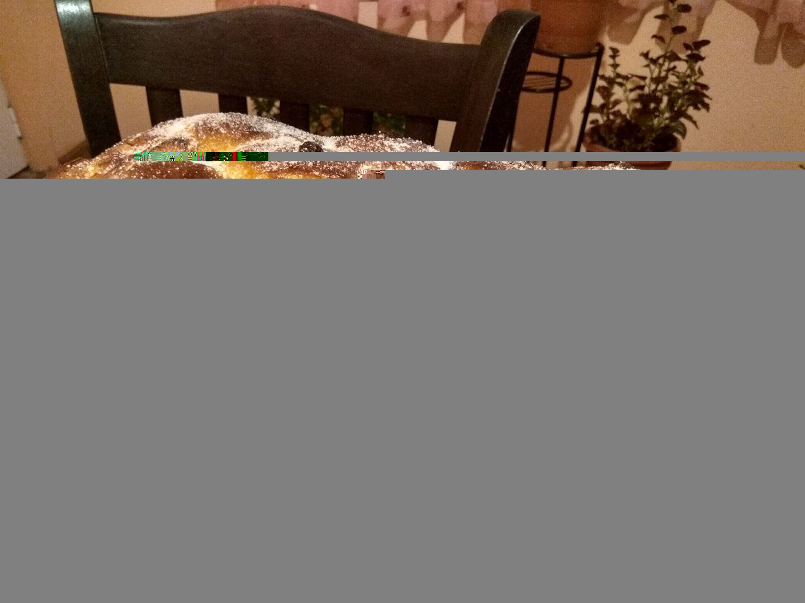 |
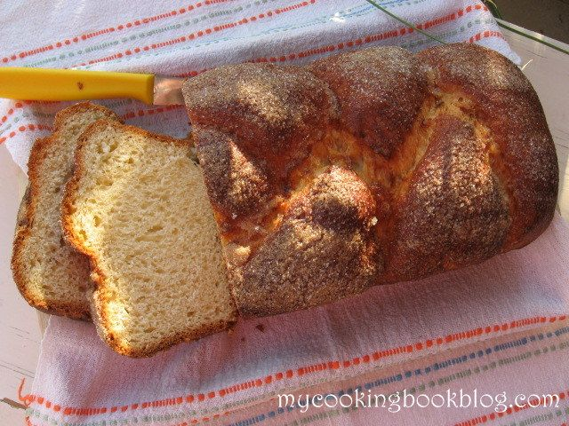 |
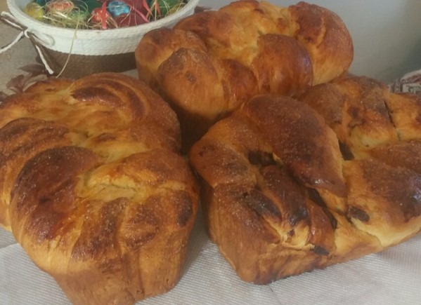 |